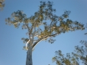
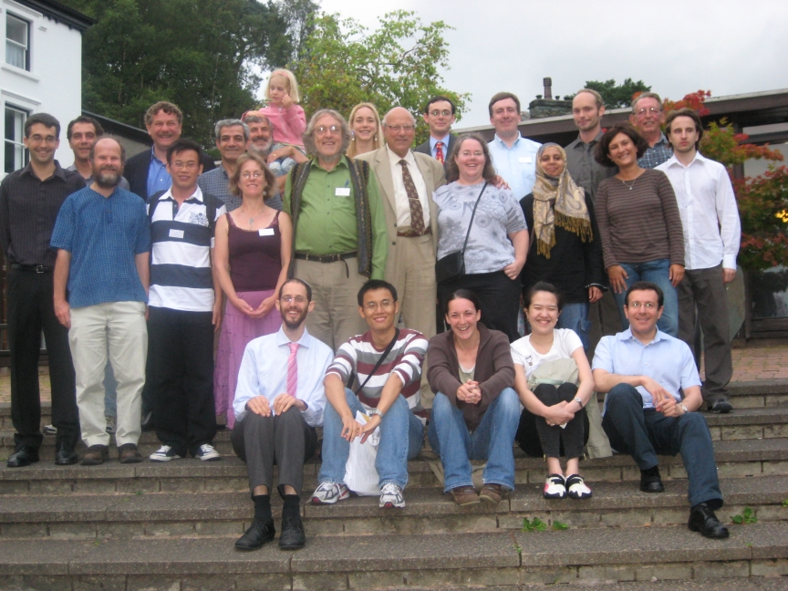

|  | Peter Cameron's students |
Here is a list of people who have completed a D.Phil. or Ph.D. under my supervision.
| At Oxford University | At Queen Mary, London | ||
|---|---|---|---|
|
|
| At St Andrews | Honorary students* | ||
|---|---|---|---|
|
|
* This includes students for whom I was second supervisor.
Current student: Siavash Lashkarigouchani
The Mathematics Genealogy Project website currently lists 111 of my mathematical descendants. Pictures of some of them are available in my picture gallery. (Eric Lander has had quite a few students, but it seems that only two are classified as mathematicians!)
My academic father is Peter M. Neumann. I was awarded the D.Phil. degree by Oxford University in 1971; my thesis was called "Structure of suborbits in some primitive permutation groups". My grandfather is Graham Higman, and my great-grandfather Henry Whitehead. The sequence continues back to O. Veblen, E. H. Moore, H. A. Newton, M. Chasles, S. D. Poisson, and J.-L. Lagrange. The MacTutor History of Mathematics archive describes Lagrange as "largely self-taught", but the Mathematics Genealogy Project, after making the statement
"No dissertation, no advisor, but we show a link to Euler to show a connection in our intellectual heritage"continues the sequence back through Leonhard Euler, Johann Bernoulli, Jacob Bernoulli, and Gottfried Wilhelm von Leibniz, to Erhard Weigel (who has more than 70000 descendants: for the current figure, see here).
Note added 8 June 2010: The MGP has added a lot more entries and links to its database for mediaeval and renaissance mathematicians. Allowing multiple supervisors, I now have many lines of descent, and my ancestry includes such luminaries as Luca Pacioli (who, according to Vasari, stole the results of Piero della Francesca) and Nicolaus Copernicus.
Here is a picture of me with Peter Neumann and many of my students, taken at Ambleside in August 2007.

Peter J. Cameron
21 November 2022